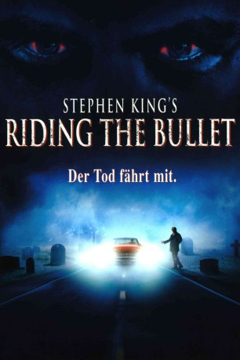

#11133 Riding the Bullet
 
 IMDB-Wertung: 5.2 / 10
IMDB-Wertung: 5.2 / 10  Tomatometer: 27
Tomatometer: 27  Metascore: 37
Metascore: 37 
Halloween 1969: Der junge Kunststudent Alan hat Schwierigkeiten, seinen Platz in der Welt zu finden. Geplagt von alptraumhaften Todesvisionen, versucht er sich das Leben zu nehmen. Das Vorhaben scheitert zwar, doch nach seiner Genesung wird er von seiner Freundin verlassen. Zu allem Überfluss erfährt er wenig später auch noch, dass seine Mutter einen Schlaganfall erlitten hat und nun, dem Tod nahe, im Krankenhaus liegt. Daraufhin fasst Alan den Entschluss, die USA per Anhalter zu durchqueren, um seine einzige noch lebende Verwandte zu besuchen. Dabei steigt er ins Auto des mysteriösen George, den ein düsteres Geheimnis umgibt und der Alan zu einer höllischen Odyssee durch seine seelischen Abgründe entführt.
verschieben zu "X:\Person\Stephen King"
Jahr: 2004
Dauer: 99 Minuten
FSK: 16
Land: USA Studio: IFGTonspuren: DTS - ,
Untertitel:
Auflösung: 1080p (1920x1080) Größe: 12800 MB
Genre: Thriller, Horror
Regisseur: Mick Garris
Drehbuch: Mick Garris, Stephen King
Soundtrack: Nicholas Pike
Darsteller:
- Jonathan Jackson als Alan Parker
 David Arquette als George Staub
David Arquette als George Staub Cliff Robertson als Farmer
Cliff Robertson als Farmer Barbara Hershey als Jean Parker
Barbara Hershey als Jean Parker Erika Christensen als Jessica Hadley
Erika Christensen als Jessica Hadley- Barry W. Levy als Julian Parker
 Jeffrey Ballard als Alan - Age 12
Jeffrey Ballard als Alan - Age 12- Peter LaCroix als Mature Alan
 Chris Gauthier als Hector Passmore
Chris Gauthier als Hector Passmore Matt Frewer als Mr. Clarkson
Matt Frewer als Mr. Clarkson- Simon Webb als Grim Reaper
 Nicky Katt als Ferris
Nicky Katt als Ferris- Tatiana Turner als Sobbing Wife
 Ming Lo als Doctor in Mom's Room
Ming Lo als Doctor in Mom's Room- Greg Rogers als Businessman Selling Cadillac
- Mick Garris als Dr. Higgins
- Cynthia Garris als Nurse Annie Wilkes
- Haig Sutherland als Rally Student #1
 Ben Cotton als Rally Student #2
Ben Cotton als Rally Student #2- Jackson Warris als Alan - Age 6
- Robin Nielsen als Archie Howard
 Keith Dallas als Orderly
Keith Dallas als Orderly- Danielle Dunn-Morris als Mrs. Janey McCurdy
- Mike Shustek als Cop at Accident #1
- Tony Cuzela als Cop at Accident #2
- Terry Howson als Cop at Accident #3
- Francis Boyle als Talking Corpse
- David Purvis als Mr. Dalrymple
- Dylan Basile als Kid Buying Cadillac
- Howard Kaylan als Apple Man
- Natalye Vivian als Yvonne Ederle
- Mark McConchie als Dr. Shustek
- Catherine Devine als Art Class Model
- Norman Krevoy als Janitor in Hospital
- Cecile Krevoy als Sexy Mute Nurse in Hospital
- Sandra-Jessica Couturier als Roller Coaster Rider (uncredited)
Datei: X:\2004(N-Z)\Riding the Bullet (2004, FSK16, 1920x1080).mkv seit 25.04.2019
Festplatte: HD 2003-2004-2005(A-F)
 Es gibt insgesamt 54 Filme in der Gruppe '2004(N-Z)'
Es gibt insgesamt 54 Filme in der Gruppe '2004(N-Z)'